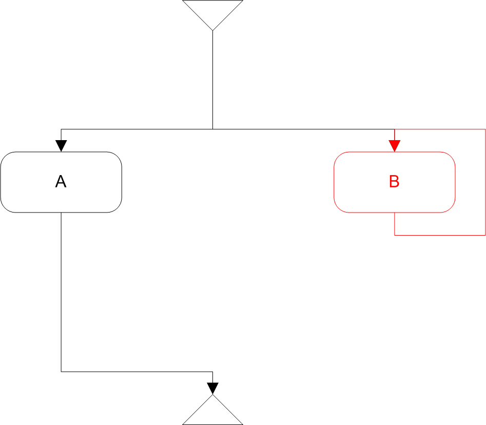

Livelock
is a property of an HMSC. An HMSC contains a livelock if there exists a cycle of nodes from which no endnode is reachable. It is required that the cycle contains at least one reference node.
SCStudio finds and displays all such cycles in a given HMSC.
An example of livelock is depicted on the next picture. It clearly satisfies all conditions for livelock.
-
- 
- Typical livelock